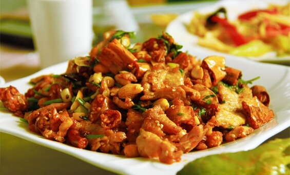
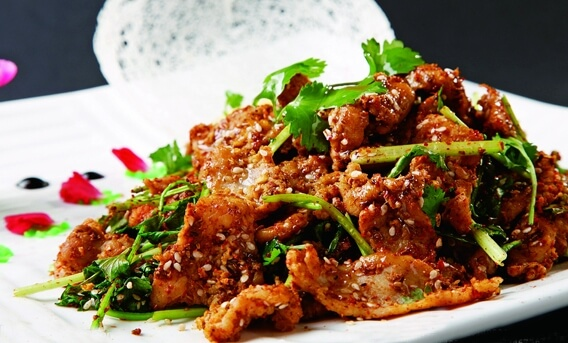
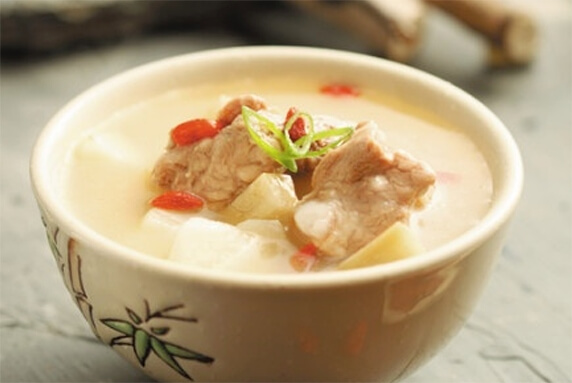

羊肉，性温，为全世界普遍的肉品之一。李时珍在《本草纲目》中说：“羊肉能暖中补虚，补中益气，开胃健身，益肾气，养胆明目，治虚劳寒冷，五劳七伤”。羊肉最适宜于冬季食用，故被称为冬令补品，深受人们欢迎。
准备：羊肉片、香菜、花椒粉、食盐、色拉油、姜、酱油、料酒。
步骤：
1. 将大葱切滚刀马耳段，香菜切寸段，羊肉片如果是冰冻的要提前化冻。
2. 锅烧热放入色拉油，倒入羊肉片大火爆炒，同时顺着锅边淋入料酒。
3. 到羊肉中出来的汤汁快干时，放入大葱一起炒到大葱变软。
4. 放入盐和香菜段炒匀即可。
准备：羊肉片、香菜、花椒、食盐、色拉油、糖、酱油、孜然粉、辣椒粉等。
步骤：
1. 羊肉片提前化冻，香菜洗净沥干水分切段。
2. 锅烧热倒油，下几粒花椒，出香味后，将花椒捞出不用。
3. 随后下葱、姜，倒入羊肉片翻炒至变色。
4. 调入少许糖、料酒、生抽，继续翻炒直至水收干。
5. 下孜然粒、孜然粉、盐，最后倒入辣椒面，放入香菜等炒匀出锅。
山药羊肉煲
准备：羊肉片、山药、当归、枸杞子、食盐、姜、水等。
步骤：
1. 山药去皮，切滚刀块。切好的山药放水中，防治氧化变黑。
2. 当归用清水洗净，沥干备用。
3. 锅中水烧开，羊肉片放锅中焯一下，焯完用温水冲洗一遍。
4. 锅中加适量水，放入山药、当归、生姜。中火煮至开锅。
5. 放入羊肉片，小火煮10分钟。
6. 放入半勺盐和洗净的枸杞子，盖上锅盖，小火煮2分钟即可。